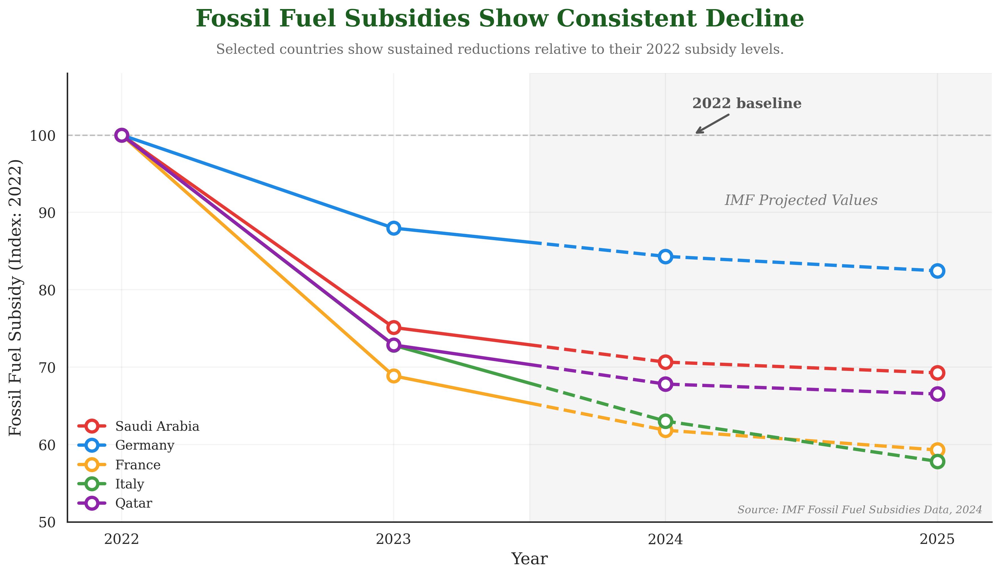
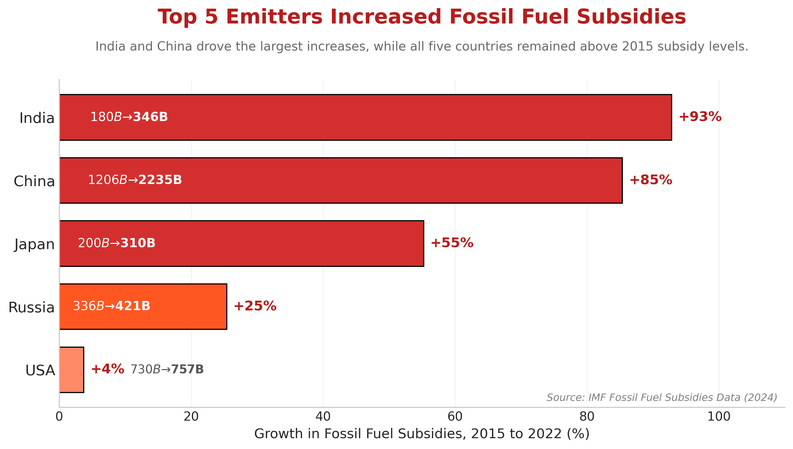

Proposition: Global fossil fuel subsidies are declining.
FOR the Proposition

Design Decisions and Rationale:
| Decision | Score | Rationale |
|---|---|---|
| Cherry-picked countries with strictly monotonic decline | −2 | Only Saudi Arabia, Germany, France, Italy, and Qatar were selected because they are the only major economies that show an unbroken year-over-year decline from 2022 to 2025. The vast majority of countries either increased subsidies over this period or had non-monotonic trends. Restricting to these five creates the visual impression that decline is widespread and consistent when it is actually the exception. The country names are recognizable and geographically diverse (Middle East, Western Europe), which further implies global breadth. |
| Starting the time axis at the 2022 global peak | −1.5 | 2022 was the global peak for fossil fuel subsidies, driven by the energy price crisis. By anchoring the chart there, every data point afterwards naturally appears lower. Had the chart started in 2015 or 2019, several of these same countries would show net increases, undermining the proposition. The short four-year window (2022–2025) also reduces the chance that non-declining years enter the frame. |
| Indexing values to 2022 = 100 | 0 | Normalizing each country to a common baseline of 100 is a legitimate technique for comparing relative changes across economies of very different sizes. Without indexing, smaller countries like Qatar would be nearly invisible next to Saudi Arabia. However, this normalization also conceals that these countries still spend hundreds of billions of dollars annually on subsidies in absolute terms, a context that would weaken the "declining" narrative. The decision is both useful and mildly convenient for the proposition. |
| Incorporating IMF projections (2024–2025) as continuous data | −1 | The 2024 and 2025 data points are IMF model-based projections, not measured actuals. While a light gray shaded band and an "IMF Projections" label do mark this region, the lines flow through the projection zone without any visual break. Casual readers are unlikely to distinguish projections from real data, and the projected portion accounts for half the chart's visible downward slope. A more honest approach would use dashed lines or clearly discontinue them at 2023. |
| Green title color and action-oriented phrasing | −1 | The title reads "Major Economies Cutting Fossil Fuel Subsidies - Consistent Decline Since 2022 Peak." The word "cutting" implies deliberate policy action, and green is culturally associated with environmental progress. In reality, some of the declines reflect falling energy prices and post-crisis normalization rather than intentional policy reform. This framing primes viewers to interpret the decline as a positive, purposeful trend before they examine the data. |
AGAINST the Proposition

Design Decisions and Rationale:
| Decision | Score | Rationale |
|---|---|---|
| Selecting the top 5 emitters as the frame | −0.5 | Framing the chart around the "top 5 emitters" is rhetorically powerful: it implies these are the countries that matter most for the climate, so if they are increasing subsidies, the global trajectory cannot be improving. This is a reasonable framing since these countries account for the majority of global emissions. However, it is also convenient because these specific countries happen to show the largest absolute subsidy growth. A randomly sampled group of five countries might tell a more mixed story. |
| Choosing 2015–2022 as the comparison window | −1 | The window 2015–2022 was selected because it captures the full run-up to the global energy crisis peak, maximizing apparent growth. Ending at 2023 would reduce growth rates for several countries (e.g., Japan and Korea declined from their 2022 peaks). Using 2022 as the endpoint frames the story at the worst possible moment for the "declining" argument, without explicitly calling attention to the fact that 2022 was an anomalous spike year. |
| Absolute dollar values displayed inside bars | +1 | Embedding the raw dollar figures (e.g., "$180B → $346B" for India) inside each bar provides honest quantitative context that percentage growth alone would obscure. This makes it easy for readers to understand the true scale of subsidies, and it prevents the chart from being purely a relative-change visualization. The USA's bar is too small to hold the text, so only the percentage is shown, an honest concession to readability rather than a deceptive omission. |
| Red color gradient scaled to growth intensity | −1 | Bars are colored from light salmon (low growth, USA) to deep crimson (high growth, India/China), using a gradient that culturally associates intensity with danger. This nudges readers to perceive subsidy growth as alarming before they read the numbers. A neutral color palette (e.g., blue or gray) would present the same data without emotional priming. The choice is deliberate: red reinforces the "crisis" framing of the opposing proposition. |
| Sorting bars by growth rate, placing USA last | −0.5 | Ordering bars from highest to lowest growth rate (India → China → Japan → Russia → USA) ensures the most alarming figures dominate the top of the chart, which readers scan first. Placing the USA at the bottom downplays that even the country most often cited as a reform leader still increased subsidies by 4%. An alternative ordering by absolute subsidy level would highlight China and Russia's sheer scale, which could have been even more striking. This ordering was chosen to maximize perceived momentum of global growth. |
Final Reflection
The central challenge of this assignment was discovering just how much the same dataset could be made to argue opposite things without ever fabricating a number. Every value in both charts is accurate; yet they reach diametrically opposed conclusions. The "FOR" chart looks at five handpicked countries over a four-year window beginning at the all-time peak, and every line goes down. The "AGAINST" chart looks at the five largest emitters over seven years ending at the all-time peak, and every bar goes up. Neither chart lies; both mislead. That realization (that deception and accuracy are not opposites) was the most striking thing to emerge from the process. We expected deceptive visualization to require distorted axes or fabricated data. Instead, the most effective techniques were choices about framing: which countries, which years, and which baseline to normalize against.
What proved harder than expected was finding countries that genuinely and consistently showed declining subsidies. The overwhelming reality in the dataset is that global subsidies have grown, not just in absolute terms but also as a share of GDP in most nations. Sustaining the "FOR" case required progressively narrowing the selection criteria: from all countries, to countries with declines over any period, to countries with strictly monotonic year-over-year declines from the 2022 peak. By the time we found five such countries, we had effectively constructed the most flattering possible scenario: five economies in a post-energy-crisis normalization phase, two of which rely on IMF projections to complete the downward slope. In contrast, the "AGAINST" chart almost built itself: the five largest emitters showed large, unambiguous growth without any selection gymnastics. This asymmetry in how hard each side was to construct is itself evidence about which side better reflects reality.
This process has reshaped how we think about ethical visualization. Ethical analysis is not just about avoiding outright falsehoods; it requires active transparency about the choices that shaped what the viewer sees. A visualization is deceptive not only when it truncates an axis or fabricates a label, but also when it quietly omits contradictory evidence, chooses a convenient baseline without disclosing it, or uses projections without distinguishing them from observations. The line we would draw between "acceptable persuasion" and "misleading" comes down to reversibility of inference: can a careful reader reconstruct what was left out? A chart that shows indexed values but labels the baseline year and cites the source gives readers tools to interrogate it. A chart that flows projections seamlessly into actuals, or titles itself "Consistent Decline" without acknowledging the cherry-picked window, removes those tools. The first is persuasive; the second is deceptive, even if every plotted number is technically correct.